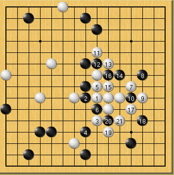
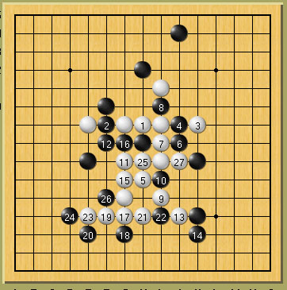
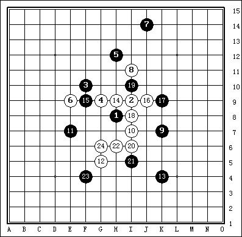
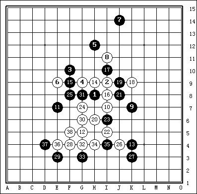
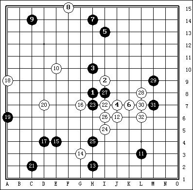

VCF习题 （白先）
#1 VCF习题 （白先） 作者：飞翔 发表时间：2006-2-26 9:53:20
第一题#2 Re:VCF习题 （白先） 作者：飞翔 发表时间：2006-2-26 9:57:56
第二题 （白先）#3 Re:VCF习题 （白先） 作者：飞翔 发表时间：2006-2-26 10:03:18
习题区的题目 可直接在线做：）#4 Re:VCF习题 （白先） 作者：飞翔 发表时间：2006-3-8 13:51:52
第一题答案[hf]
[/hf]
[hf]
[/hf]
#5 Re:Re:VCF习题 （白先） 作者：常笑 发表时间：2006-3-8 19:19:30

#6 Re:VCF习题 （白先） 作者：busket 发表时间：2006-3-9 17:23:21
kankan#7 Re:Re:VCF习题 （白先） 作者：望天聆风 发表时间：2006-3-11 23:42:23
做出来了#8 Re:VCF习题 （白先） 作者：qq4114 发表时间：2006-4-6 10:40:33
学习#9 Re:Re:VCF习题 （白先） 作者：逗你玩 发表时间：2006-4-11 17:22:26
做下试试，I9 H9 I11 H12 I8 I10 L8 M7 M9 L9 I5 I6 J6 K7 J8 J7 L10 M11 J12
#10 Re:VCF习题 （白先） 作者：逗你玩 发表时间：2006-4-11 17:32:51
做错了
#11 Re:VCF习题 （白先） 作者：清逸 发表时间：2006-4-22 13:24:27
看看答案~~#12 Re:VCF习题 （白先） 作者：tzwzm 发表时间：2006-4-22 15:19:03
485454#13 Re:VCF习题 （白先） 作者：kaka 发表时间：2006-4-25 12:27:04
look#14 Re:VCF习题 （白先） 作者：赵家熹 发表时间：2006-4-27 17:06:48
hao#15 Re:VCF习题 （白先） 作者：fuzj 发表时间：2006-7-11 8:19:57
kankan#16 Re:VCF习题 （白先） 作者：晕晕男人 发表时间：2006-7-14 2:06:05
暗暗#17 Re:VCF习题 （白先） 作者：泉之潮 发表时间：2006-7-30 0:35:05
第二题不会
#18 Re:VCF习题 （白先） 作者：xialin 发表时间：2006-8-4 19:14:16
看不到顺序~#19 Re:VCF习题 （白先） 作者：lxb972 发表时间：2006-8-4 19:59:45
,,,,,,,,,,,,,,,,,,,,,,,,,,,,,,,,#20 Re:Re:VCF习题 （白先） 作者：一生有梦 发表时间：2006-8-7 13:41:57
看答案#21 Re:VCF习题 （白先） 作者：simon 发表时间：2006-8-7 23:36:45
kankan#22 Re:Re:VCF习题 （白先） 作者：化羽重生 发表时间：2006-8-8 10:47:27
我如何回复才能看到呢？#23 Re:VCF习题 （白先） 作者：liao 发表时间：2006-8-8 13:09:23
学习#24 Re:VCF习题 （白先） 作者：三眼蟹 发表时间：2006-8-16 22:06:36
dddddd#25 Re:VCF习题 （白先） 作者：大鹏 发表时间：2006-8-22 19:38:26
谢谢
#26 Re:VCF习题 （白先） 作者：411412 发表时间：2006-8-26 13:02:08
第2题怎么解？
#27 Re:VCF习题 （白先） 作者：marddr 发表时间：2006-8-26 15:27:34
呵呵 还好两道都做出来了#28 Re:VCF习题 （白先） 作者：marddr 发表时间：2006-8-26 15:40:24
晕 做错了 好复杂啊
#29 Re:VCF习题 （白先） 作者：蚯蚓降龙 发表时间：2006-9-1 23:25:28
高啊
#30 Re:VCF习题 （白先） 作者：待宰羔羊 发表时间：2006-9-4 13:37:44
看看
#31 Re:VCF习题 （白先） 作者：cha 发表时间：2006-9-5 15:04:41
看看#32 Re:VCF习题 （白先） 作者：检查用户名 发表时间：2006-9-18 14:35:22
顶！#33 Re:VCF习题 （白先） 作者：杨华明 发表时间：2006-9-19 8:09:16
我好笨#34 Re:VCF习题 （白先） 作者：yy6124 发表时间：2006-10-3 23:38:31
也来学学#35 Re:VCF习题 （白先） 作者：学好学 发表时间：2006-10-9 20:59:43
学习#36 Re:VCF习题 （白先） 作者：浪影 发表时间：2006-10-12 15:12:59
fds#37 Re:VCF习题 （白先） 作者：破网的蜘蛛 发表时间：2006-10-17 13:31:02
dddddddd!#38 Re:VCF习题 （白先） 作者：那人 发表时间：2006-10-21 9:49:50
看着有点乱#39 Re:VCF习题 （白先） 作者：august 发表时间：2006-10-22 10:34:58
回复#40 Re:VCF习题 （白先） 作者：august 发表时间：2006-10-22 10:37:16
看看#41 Re:VCF习题 （白先） 作者：mycele 发表时间：2006-12-3 23:37:01
学习之：）#42 Re:VCF习题 （白先） 作者：mfkghd 发表时间：2006-12-9 18:57:50
...see#43 Re:VCF习题 （白先） 作者：623193 发表时间：2006-12-10 21:42:39

#44 Re:VCF习题 （白先） 作者：zanlin 发表时间：2006-12-11 1:49:21
强悍
#45 Re:VCF习题 （白先） 作者：紫风铃 发表时间：2006-12-11 22:24:27
能看到吗
#46 Re:VCF习题 （白先） 作者：雨季 发表时间：2006-12-19 18:11:13
学习
#47 Re:VCF习题 （白先） 作者：他化自在天 发表时间：2006-12-23 19:58:32
sfsfsdfsd#48 Re:VCF习题 （白先） 作者：隐藏菜系 发表时间：2007-3-6 17:49:03
太强！
#49 Re:VCF习题 （白先） 作者：yuelee 发表时间：2007-3-13 15:44:29
第二题太恐怖-_-!!
#50 Re:VCF习题 （白先） 作者：lilied 发表时间：2007-3-25 9:26:00
变化少，比较好做~~~#51 Re:VCF习题 （白先） 作者：lilied 发表时间：2007-3-25 9:39:13
第2题难些，请问做这些题是要边想边下还是完全计算出来才下啊
#52 Re:VCF习题 （白先） 作者：休闲号 发表时间：2007-4-12 10:36:27
试做一下。。。。#53 Re:VCF习题 （白先） 作者：jackal 发表时间：2007-4-26 13:07:43
H10,G9,G10,I8,I10,J10
白的这样走,算不算是VCF?
版主帮忙指点一下?
谢谢...
#54 Re:VCF习题 （白先） 作者：jackal 发表时间：2007-4-26 13:25:50
I8(I6),H7(F7),J7(K7),I10(I11),H10(F12),G10
"()"里面的是只黑棋着点,这样的算不算是VCF?
不过最后还是胜了.呵呵.
#55 Re:VCF习题 （白先） 作者：jackal 发表时间：2007-4-26 14:24:58



#56 Re:VCF习题 （白先） 作者：jackal 发表时间：2007-4-26 14:26:31